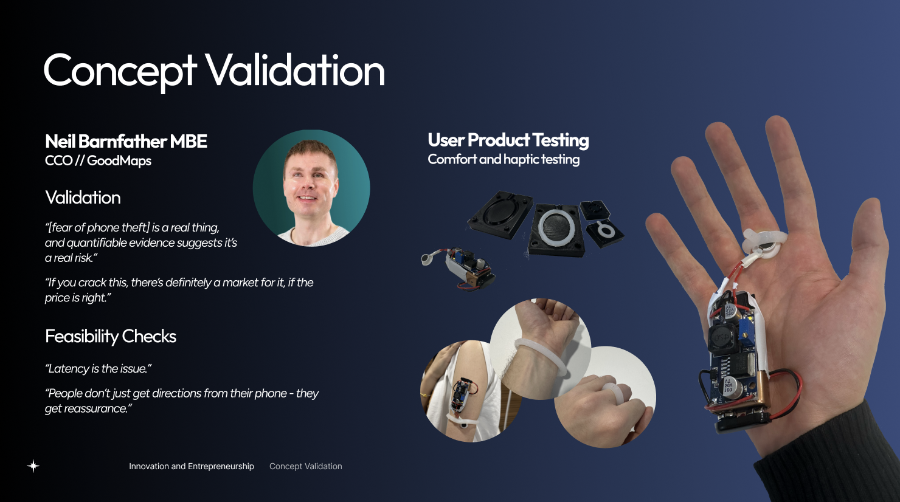
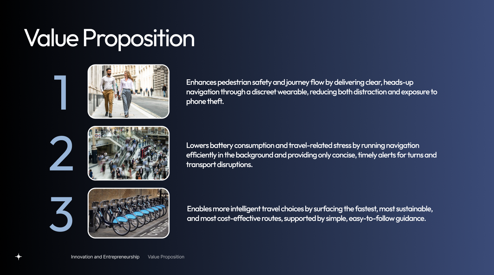
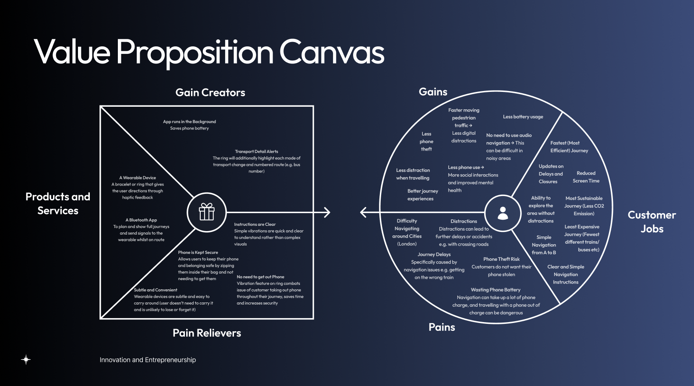
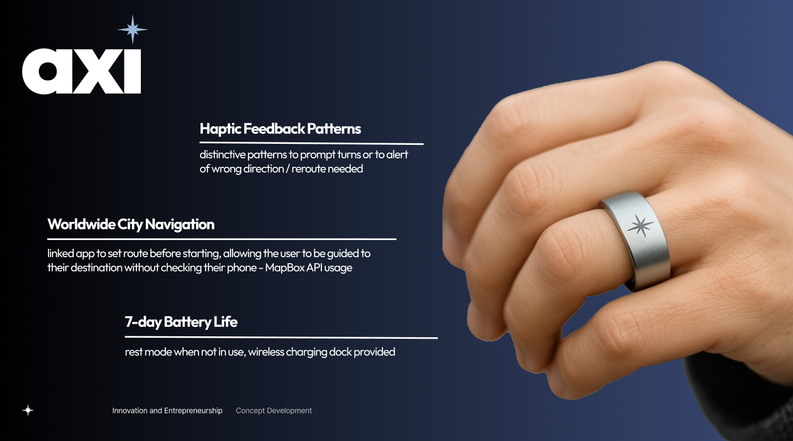
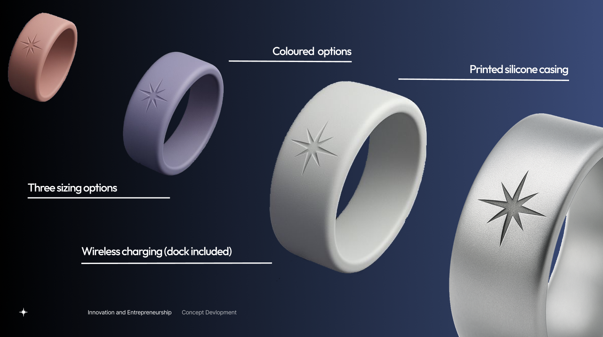
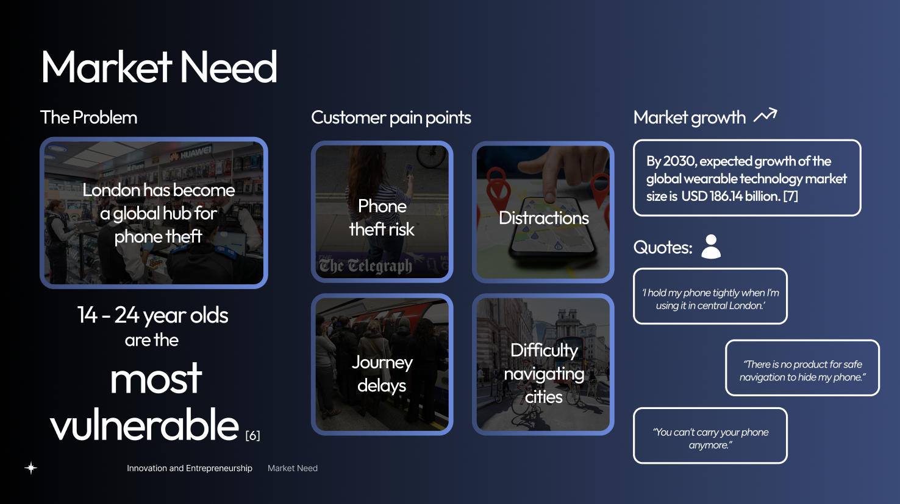
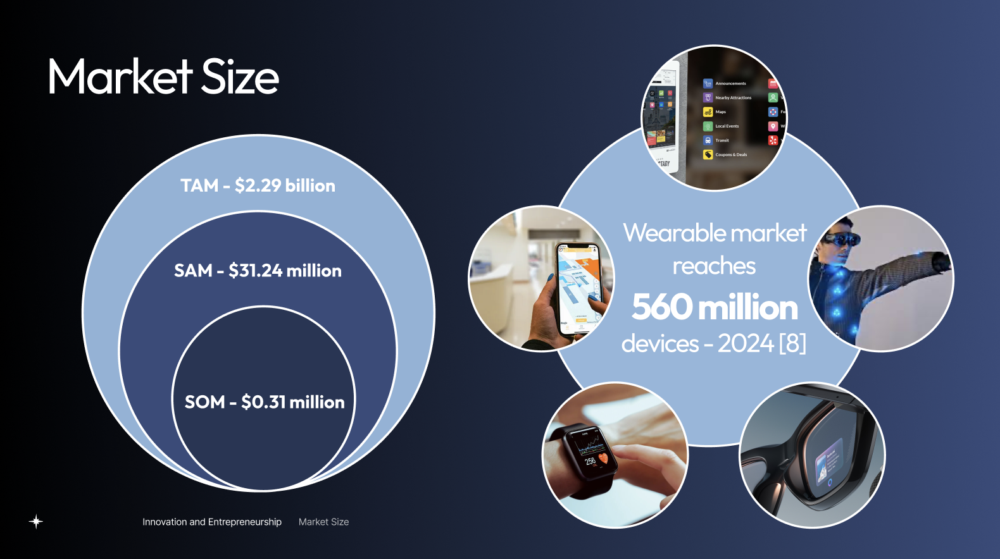
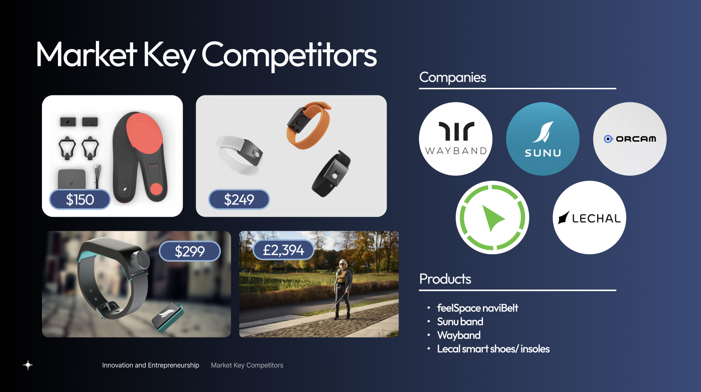
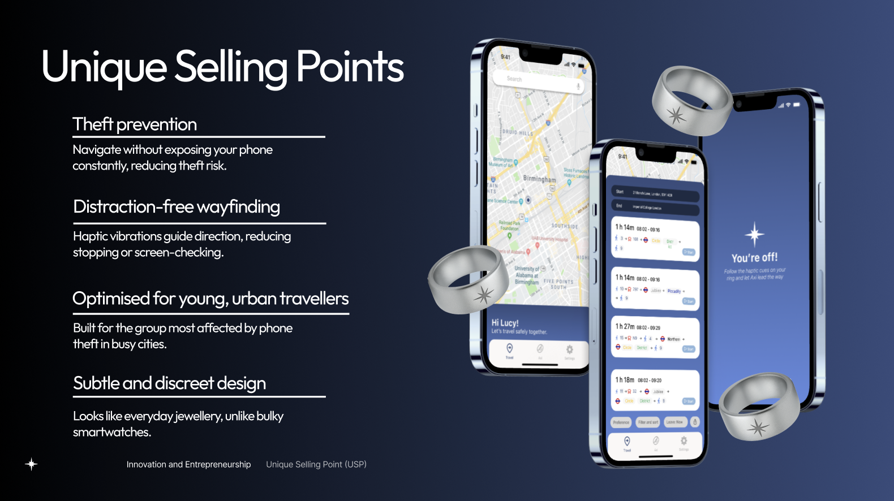
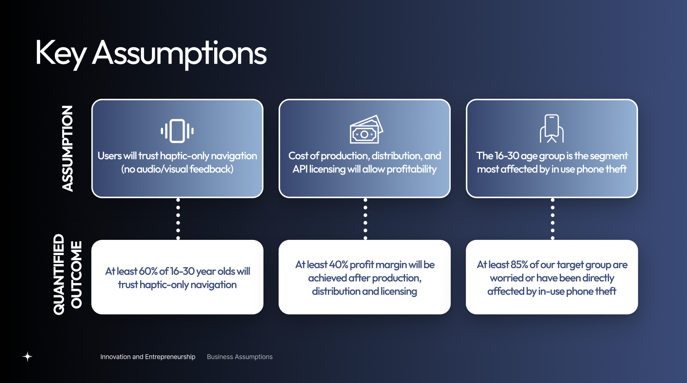

Axi
Innovation & Entrepreneurship Project
Overview
Axi was developed for the Innovation & Entrepreneurship module. The module combines design thinking, business strategy and product commercialisation, and challenged us to take an idea from a real problem through to a viable venture.
Axi is a discreet haptic navigation ring that lets users keep their phone safely stored away while still receiving clear directions. Distinct vibration patterns signal left turns, right turns, off-route alerts and arrival. Users set their route in the companion app beforehand, and navigation then runs in the background using the Mapbox API.

Problem
Phone theft in London is rising sharply: 62% of Londoners feel more cautious using their phones outdoors, and 70% of thefts are rapid snatches targeting distracted people. Phones are often hidden or tightly held in public.
Navigation apps make this worse. Users must keep checking their screens, which distracts them and exposes their phones in high-theft areas. Existing hands-free options are expensive and obtrusive, and not designed for young urban travellers. The core problem is the lack of a simple, hands-free way to navigate cities without risking your phone or your spatial awareness.

Primary Research
We conducted interviews and surveys to understand user needs and pain points. This research informed our design decisions and helped us create a solution that truly addresses the problem of phone theft and distracted navigation.


Design Process

Concept Validation
We conducted user testing to validate the haptic patterns and overall design. Participants were able to accurately identify the different vibration signals, confirming the effectiveness of our design. Feedback also highlighted the importance of comfort and style, which informed our final design choices.

Value Proposition
Axi gives pedestrians a safer, calmer and smarter way to get around the city, with navigation they can feel rather than see.
- Safer, smoother journeys: Clear, heads-up navigation through a discreet wearable reduces both distraction and exposure to phone theft.
- Less battery drain and stress: Navigation runs efficiently in the background, with only concise, timely alerts for turns and transport disruptions.
- Smarter travel choices: Axi surfaces the fastest, most sustainable and most cost-effective routes, with simple, easy-to-follow guidance.


Final Design
The final Axi ring is a discreet, comfortable haptic navigator that guides users through the city using vibration alone, so their phone can stay in their pocket.

Features
Axi combines simple, reliable navigation with everyday practicality, so it works as well as a piece of jewellery as it does as a navigation tool.

Market Need
Market research shows a growing demand for discreet, hands-free navigation solutions. Axi addresses this need by providing a stylish, functional wearable that enhances safety and convenience for urban travellers.

Market Size
The current GPS market size is estimated at $110 billion, projecting to reach $440 billion by 2033. Growth is driven by smart-city developments, increased demand for navigation services and the growth of GPS-enabled wearables. Axi targets the urban commuter segment, which is a significant portion of this market, with potential for expansion into other segments such as tourists and outdoor enthusiasts.

Key Competitors
Axi competes with a small group of direct haptic navigation devices, including Wayband, Lechal and Feelspace, as well as a wider set of indirect alternatives that users already rely on.
Beyond direct haptic devices, we also evaluated indirect competitors:
- Navigation apps such as Google Maps and Apple Maps offer accessible guidance for a wide range of users, but require constant phone use.
- Smartwatches such as the Apple Watch provide turn-by-turn directions through wrist notifications.
- Accessibility aids support visually impaired users through audio feedback.

Unique Selling Points
Axi stands out by keeping your phone out of sight and your eyes up, with directions you can feel rather than see.

Key Assumptions
Axi stands out by keeping your phone out of sight and your eyes up, with directions you can feel rather than see.

Customer Segments
Axi is designed for three groups who share a need for safer, screen-free navigation: students as our core users, tourists as a short-term segment, and people who benefit from tactile, eyes-free guidance.
Revenue Streams
Axi operates a subscription-led model. The wearable is provided at no upfront cost, but the hardware must be returned when the subscription ends.

Revenue comes from recurring subscriptions, B2B2C partnerships and optional accessories. This lowers adoption barriers and prioritises long-term customer value, which suits our lower-budget target market.

Axi offers a small range of optional accessories to personalise or adapt the device. These include ring colour variants, patterned rings, and the axiBand wristband for users who prefer a non-ring form factor. The accessories enhance usability and expression while adding a revenue stream.

Customer acquisition combines TfL tube advertising, social media ads, and university and tourism partnerships, chosen to reach young urban users. Funnel modelling shows a low weighted customer acquisition cost of £5.19, supported by high daily exposure and low-cost partner distribution.

Financials
Financial modelling shows strong customer lifetime value relative to acquisition cost. Year 1 reflects planned losses from upfront marketing and operational investment, but Axi reaches profitability in Year 2, with margins strengthening to £177,388 by Year 3 as recurring revenue grows and fixed costs stabilise.